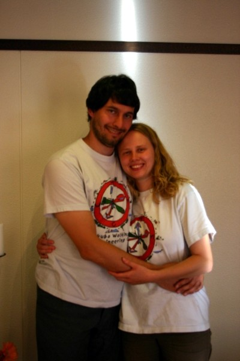

| Hello our dear TWMCers! Long time no see, long time no hear ;-))) But here we are, back with some good news! We got married in Iceland the 29th September 2006! And to feel our dedication to TWMC, please look at the pictures: http://pictures.svitlana.grytsenko.info/20060929_wedding/ Without being too shy, I can say that
wearing TWMC t-shirts was my idea and Nicolas (now my husband, wow)
heartily supported it!
|
 |